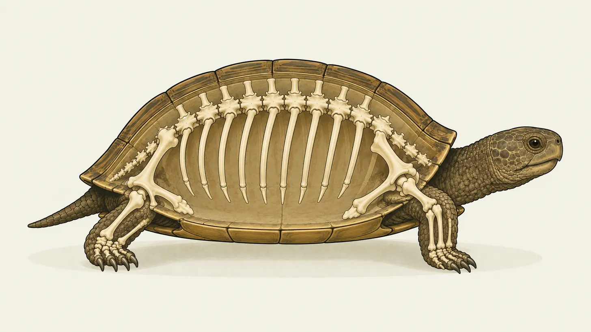
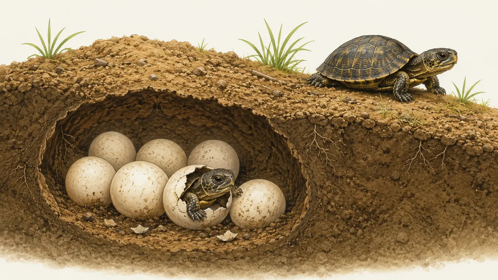
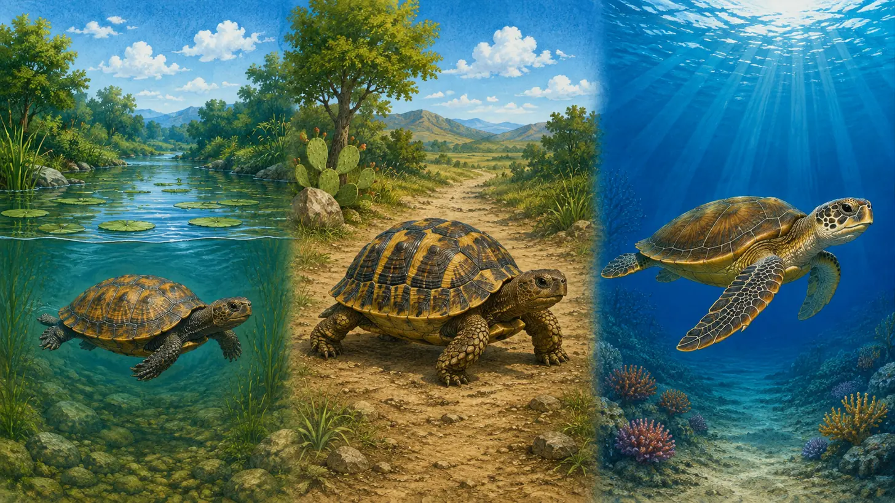
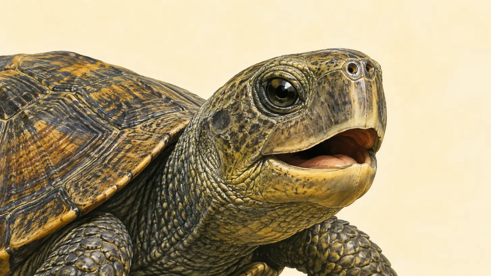
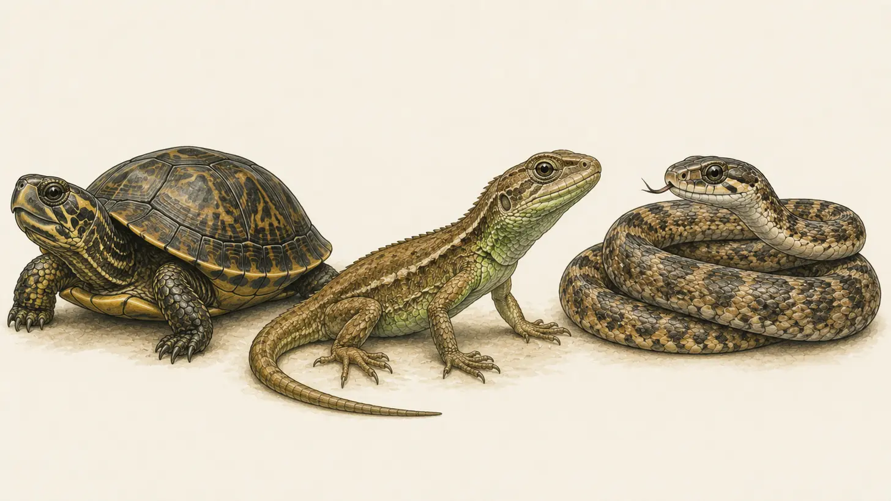

カメって こんな 生きもの
まずは カメの ことを 5つ。知って いるのは いくつ あるかな？
-
せなかに 甲羅が ある

甲羅の 中の ようす
これ、じつは カメの 体の 一部なんだ。中には 背骨も とおって いるよ。 -
たまごから うまれる

土の 中の たまご
こたえは たまご。どの カメも たまごを うむよ。土や 砂に あなを ほって、その 中に うむんだ。 -
水の カメも りくの カメも いる

池・りく・海の カメ
そうでも ないんだ。池や 川で およぐ カメも いれば、りくを あるく カメも いる。海で くらす カメだって いるよ。 -
歯が ない

カメの 口の 中
いま いる カメには、歯が 1本も ないんだ。かわりに、かたい くちばしで 食べものを かむよ。 -
トカゲや ヘビの なかま

カメ・トカゲ・ヘビ
トカゲや ヘビと 同じ なかまなんだ。まとめて は虫類と よぶよ。